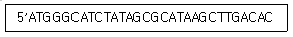
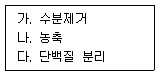
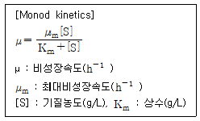
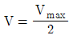
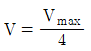
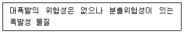
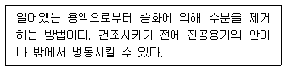

바이오화학제품제조기사 (2020-06-22 기출문제)
1과목: 미생물공학
1. Psychrophile 이란 다음 어떤 조건에서 자라는 미생물인가?
- 낮은 pH(pH 2-4)
- 높은 pH(pH 10-12)
- 낮은 온도(4-15℃)
- 높은 염도
(정답률: 71%)

2. 바이오화학소재 생산을 위한 원·부재료에 대한 품질관리 공통 사항으로 옳지 않은 것은?
- 입고 전 원·부재료별 품질 기준에 따른 품질 검사 실시
- 원료별 보관 조건에 맞는 보관장소 마련 및 청결 유지
- 장/단기 사용 원료를 서로 구분하여 반드시 따로 별도의 창고에 보관
- 원·부재료 보관 장소에 점검일지를 비치하여 정기적 점검 및 미비 사항 보완
(정답률: 83%)
3. 국내 대표적인 미생물 균주 분양 기관인 생물자원센터(KCTC) 홈페이지에서 균주를 검색할 때 나타나는 검색 결과에 포함되지 않는 것은?
- 자원 번호 및 타기관 균주 번호
- 학명 및 자원종류
- Biosafety Level 및 기본 가격
- 영양요구성 및 병원성 여부
(정답률: 66%)
4. 대수기 상태인 미생물의 농도가 1×107 cells/mL일 때 2시간 후 미생물 농도(cells/mL)는? (단, 대수기에서의 세대시간은 30 min이다.)
- 4×107
- 8×107
- 16×107
- 32×107
(정답률: 71%)
5. 순수세포성장속도 (Net Growth Rate)가 0이며 주로 이차대사물이 생성되는 세포성장주기는?
- 지연기
- 지수 성장기
- 정지기
- 사멸기
(정답률: 82%)
6. 생물체의 명명법에 대한 설명으로 옳지 않은 것은?
- 미생물은 이명법(Binary nomenclature)을 사용하고 이름은 라틴어로 명명한다.
- Escherichia coli 경우 Escherichia는 종(Species)명이고 coli는 속(genus)명이다.
- 보고서나 논문에서 생물체가 처음 언급될 때에는 종명, 속명을 모두 써주어야 하며 그 다음에는 속명의 경우 줄여서 그 첫 자와 마침표(.)만 쓴다.
- Escherichia coli B/r과 Escherichia coli K12는 Escherichia coli의 아균주(substrain)들이며 생장이나 생리적 특성이 서로 다르다.
(정답률: 79%)
7. 포자 또는 포낭을 형성하는 건조에 강한 미생물의 균주 보관법으로 가장 적합한 것은?
- 동결 보존법
- 담체 보존법
- 동결 건조법
- 건조 보존법
(정답률: 67%)
8. 121℃에서 미생물이 1/10로 감소하는데 걸리는 시간이 1.5min이라면 총 1011개의 미생물을 10개로 감소시키는 데 걸리는 시간(min)은 약 몇 분인가?
- 15
- 20
- 25
- 30
(정답률: 80%)
9. 세포의 성장에 대한 설명으로 틀린 것은?
- 정지기에서는 세포의 성장속도와 사멸속도가 같다.
- 세포의 비성장속도가 1h-1 일 때 세포의 배가시간은 약 42 분이다.
- 대수성장기에서는 세포의 성장속도가 영양소 농도와 관련되어 있다.
- 대수성장기에서는 시간에 따라 세포의 질량과 수가 지수적으로 늘어난다.
(정답률: 53%)
10. DNA 복제 및 전사와 관련 효소 중 염색체 DNA의 초나선(Supercoiled) 구조를 풀어서 공유결합폐쇄환성(Covalently-Closed-Circular) DNA의 형태를 변화시킬 수 있는 효소는?
- Nuclease
- Polymerase
- Topoisomerase
- Modifying Enzyme
(정답률: 70%)
11. 진핵세포의 세포 소기관과 그 기능의 연결이 틀린 것은?
- 조면 소포체 - 당합성
- 핵 - DNA합성
- 리보솜 - 단백질 합성
- 액포 - 세포 폐기물 저장
(정답률: 80%)
12. 다음 원·부재료 샘플링 검사들 중 샘플링 횟수가 다른 한 가지는?
- AQL(aceeptable quality level)
- MSI(multiple sampling inspection)
- OC(operating characteristic)
- LTPD(lot tolerance percent defective)
(정답률: 68%)
13. 비성장속도(Specific Growth Rate)에 대한 설명으로 옳은 것은?
- 단위는 h-1로서 단위시간당 단위균체당 변화된 균체의 양을 의미한다.
- 비성장속도와 성장속도는 같은 의미로 생물체가 한 시간 동안 증가된 개체수 혹은 개체질량을 의미한다.
- 동일한 환경조건에서 모든 미생물의 최대 비성장속도는 같다.
- 비성장속도와 기질의 소비속도, 산소소비속도 등은 반비례한다.
(정답률: 65%)
14. GMP의 유효성을 확인하는 단계 중 OQ, IQ, PQ 과정을 순서대로 나열한 것은?
- IQ → OQ → PQ
- OQ → PQ → IQ
- PQ → IQ → OQ
- PQ → OQ → IQ
(정답률: 73%)
15. 다음 중 산업적 미생물 발효에서 탄소원으로 사용되는 기질은?
- 펩톤
- 당밀
- 대두박
- corn steep liquor
(정답률: 75%)
16. 무균 상태에 대한 설명으로 옳은 것은?
- 살아 있는 세포가 전혀 없는 상태
- 살아 있는 세포가 있는 상태
- 특정한 농도 이하로 세포들이 존재하는 상태
- 세포의 생물활성이 정지된 상태
(정답률: 85%)
17. 발효 시 포도당을 사용하여 호기성 조건하에서 자라는 대부분의 효모와 박테리아의 일반적인 생장수율(Yx/s(g/g))의 값의 범위는?
- 0.4 ~ 0.6
- 0.7 ~ 1.0
- 1.1 ~ 1.4
- 1.5 ~ 1.6
(정답률: 65%)
18. 다음 중 열에 불안정한 배지 또는 기구 등을 멸균하기 위한 방법으로 옳지 않은 것은?
- 건열 멸균
- 여과 멸균
- 자외선 멸균
- Ethylene oxide 멸균
(정답률: 75%)
19. 용액의 pH가 9.68일 때 용액 중의 [H+]는 약 몇 M인가?
- 2.1×10-10
- 3.1×10-10
- 3.5×10-10
- 4.1×10-10
(정답률: 57%)
20. 품질(보증)부서 책임자는 시험지시서에 의하여 시험을 지시하여야 하는데 이 때 시험지시서에 포함될 항목이 아닌 것은?
- 시험항목 및 시험기준
- 시험지시자 및 지시연월일
- 제조번호 또는 관리번호
- 재가공방법 빛 사용상 주의사항
(정답률: 78%)
2과목: 배양공학
21. TCA회로의 주요 역할이 아닌 것은?
- 에너지의 발생
- 생합성에 필요한 NADPH의 생성
- 전자전달계에 필요한 전자(NADH)의 생성
- 아미노산 합성을 위한 탄소계 골격물질의 공급
(정답률: 62%)
22. 다음 중 시간 상수(time constant)에 해당되지 않는 것은? (단, L: 공급관의 길이, υ: 액체의 유속, μ: 비성장속도, kLa: 부피전달계수, V: 반응기 부피, Q: 유량)
- L/υ
- 1/μ
- 1/kLa
- V2/Q
(정답률: 59%)
23. 해당과정을 통해 생성되는 피루브산(Pyruvate)이 NADH에 의해 바로 환원되어 생성되는 유기산은?
- 젖산(Lactate)
- 숙신산(Succinate)
- 구연산(Citrate)
- 사과산(Malate)
(정답률: 59%)
24. COOH기와 NH3기 각각의 해리상수 pK 값이 pKCOOH는 2.4, pKNH3 는 9.6인 아미노산이 있다면, 이 아미노산의 등전점(pI)은?
- 2
- 4
- 6
- 8
(정답률: 76%)
25. 회분식 배양의지수 성장기에서 세포의 배가시간(doubling time)이 30min일 때 비성장속도(specific growth rate, min-1 )는?
- 0.017
- 0.02
- 1.39
- 43.29
(정답률: 51%)
26. HMP(Hexose-monophosphate) 경로에 관한 설명 중 옳은 것은?
- 총 2개의 NADH가 생성된다.
- 방향족 아미노산의 전구체가 생성된다.
- 기질수준 인산화에 의해 2개의 ATP가 생성된다.
- 3개, 4개, 5개, 8개의 탄소 원자를 갖는 일련의 저분자 유기화합물을 만들어준다.
(정답률: 55%)
27. 다음 [보기]의 DNA로 이론적으로 만들 수 있는 단백질의 아미노산의 개수는 몇 개 인가?

- 6
- 7
- 10
- 30
(정답률: 62%)
28. 역전사효소에 대한 설명으로 옳지 않은 것은?
- 프라이머가 필요하다.
- 합성방향은 5’→3 ’이다.
- 모든 생물에 존재하는 효소이다.
- RNA를 주형으로 하여 DNA를 합성한다.
(정답률: 80%)
29. 액체 배양법만을 사용하여 발효한 식품은?
- 청국장
- 된장
- 청주
- 식초
(정답률: 80%)
30. 생장속도에 지배되는 플라스미드 함유 균주의 불안정성을 해소할 수 있는 방안으로 옳은 것은?
- 생장속도를 늦추어 플라스미드 함유 균주를 잘 성장하도록 한다.
- 배양기간을 늘려서 플라스미드 함유 균주도 충분히 성장할 수 있는 시간을 준다.
- 항생제, 영양요구성 등의 선택압력을 주어서 플라스미드 함유 균주만 성장하도록 한다.
- 접종 시 플라스미드 함유 균주의 접종량을 늘려서 플라스미드 함유 균주만 성장하도록 한다.
(정답률: 70%)
31. 단백질과 효소의 관계를 설명한 것으로 옳은 것은?
- 효소는 운반단백질로 분류된다.
- 효소는 단백질의 일부로 분류된다.
- 단백질과 효소의 기능은 동일하다.
- 단백질과 효소는 전혀 다른 물질이다.
(정답률: 81%)
32. 페니실린에 대한 설명으로 틀린 것은?
- 베타락탐계 항생제이다.
- 그람양성균의 세포벽 합성을 저해한다.
- 주로 방선균으로부터 생산된다.
- 플레밍(A. Fleming)에 의해 발견된 세계 최초의 항생제이다.
(정답률: 73%)
33. 다량 영양소(macronutrient)에 대한 설명 중 틀린 것은?
- 인은 핵산에 존재한다.
- 질소는 단백질과 핵산의 형태로 세포생장에 이용된다.
- 탄소화합물은 세포의 탄소와 에너지의 주요 공급원이다.
- 황은 건조균체량의 약 9%를 차지하며 미토콘드리아의 성분이다.
(정답률: 79%)
34. 다음 중 지방산 생합성 단계에서 Acetyl-CoA와 이산화탄소로 생성되는 중간생성물은 무엇인가?
- 글리세롤(Glycerol)
- 말로닐-CoA(Malonyl-CoA)
- 포스포에놀피루브산(Phosphoenolpyruvate)
- 3-포스포글리세르산(3 -phosphoglycerate)
(정답률: 57%)
35. 미생물의 대사에 관한 설명으로 옳은 것은?
- 효모가 호기성 조건에서 고농도의 포도당이 존재할 경우에 에탄올을 생성하는데 이를 Pasteur effect라고 한다.
- 생체내 에너지는 주로 ATP에 의하여 저장되었다가 사용되는데, 혐기성 조건에서는 전자전달계에서 생성될 수 없다.
- 효모가 산소에 의하여 대사조절이 이루어지는 것은 Crabtree효과라고 하는데, phosphofructokinase가 조절효소이다.
- 이화작용은 세포가 화합물을 분해하여 에너지를 얻는 대사이고, 동화작용은 복잡한 화합물을 합성하는 대사이다.
(정답률: 77%)
36. Zymomonas는 포도당 1몰당 1몰의 ATP를 생산하면서 에탄올을 만들 수 있다. 이 때 사용되는 대사과정은?
- EMP 경로
- HMP 경로
- Calvin 회로
- Enter-Doudoroff 경로
(정답률: 59%)
37. 글리세롤을 생산하기 위해 알코올 발효 시 첨가하는 저해제(inhibitor)로 옳은 것은?
- acetaldehyde
- sodium bisulfite
- sodium chloride
- potassium chloride
(정답률: 59%)
38. 세균을 이용한 호기적 발효로 생산되지 않는 유기산은?
- 초산(acetic acid)
- 구연산(citric acid)
- 젖산(lactic acid)
- 글루콘산(gluconic acid)
(정답률: 58%)
39. 다음 미생물에 의한 생산물 중 생분해성 플라스틱으로 활용이 가능한 것은?
- 폴리케타이드(Polyketide)
- 폴리아이소프렌(Polyisoprene)
- 폴리글루탐산(Polyglutamate)
- 폴리하이드록시알카노에이트 (Polyhydroxyalkanoate)
(정답률: 65%)
40. 발효조에 공급되는 공기는 N2 와 O2로만 구성되어 있으며 이때 N2 와 O2의 몰 비는 79:21이다. O2의 질량 분율(mass fraction)은?
- 0.13
- 0.23
- 0.35
- 0.46
(정답률: 60%)
3과목: 생물반응공학
41. 역삼투의 원리를 가장 효율적으로 이용할 수 있는 생물공정은?
- 당(sugar)류 제품의 탈수
- 식품가공, 유제품 가공 등 분야에서의 멸균
- 유제품 가공 분야에서의 단백질 회수 및 정제
- 발효액으로부터 생산된 재조합 단백질의 회수 및 정제
(정답률: 69%)
42. 덱스트란과 함께 액/액 2상계(two phase system) 시스템을 형성하여 가용성 단백질의 추출에 사용되는 물질은?
- 에탄올
- (NH4 )2 SO4
- 아세토니트릴
- 폴리에틸렌글라이콜(PEG)
(정답률: 61%)
43. 분자생물학 실험에서 사용되는 전기영동에 대한 설명 중 옳지 않은 것은?
- 이동거리는 분자량에 비례하여 증가한다.
- 크기가 작은 분자일수록 더 쉽게 이동한다.
- 이동거리는 분자량이 감소할수록 증가한다.
- DNA의 겔 전기영동을 위한 실험의 경우 전기장에서 음전하를 띤 DNA분자가 agarose를 통하여 이동한다.
(정답률: 78%)
44. 재조합 효모에 의해 생산된 50000Da의 효소를 막분리 공정을 사용하여 농축할 때 가장 적절한 공정을 순서대로 옳게 나열한 것은?
- 역삼투 → 한외여과
- 미세여과 → 한외여과
- 한외여과 → 역삼투
- 한외여과 → 미세여과
(정답률: 56%)
45. 다음 [보기] 중 역삼투막이 사용되는 경우를 옳게 나열한 것은?

- 가, 나
- 가, 다
- 나, 다
- 가, 나, 다
(정답률: 54%)
46. 부산물 중 지정 폐기물로 분류하는 요건으로 옳지 않은 것은?
- 부식성
- 감염성
- 유해가능성
- 재활용성
(정답률: 77%)
47. 전기투석에 대한 설명 중 옳지 않은 것은?
- 적당한 전류 범위에서 단위시간당 제거되는 용질의 양은 도입한 전류의 크기에 비례한다.
- 전기투석 칸수가 늘어나면 용질의 막투과를 위한 전류효율은 그만큼 감소한다.
- 처리할 유량이나 용질 농도에 비해 전류밀도가 너무 크면 전기적 분극현상에 의해 전기투석 효율이 저하될 수 있다.
- 아미노산 등을 전기투석에 의해 분리, 회수할 때 등전점 pI와 운전 pH를 고려해야 한다.
(정답률: 60%)
48. 생물분리공정에서 발효생성물의 일반적 특성으로 가장 적합한 것은?
- 묽은 농도로 존재한다.
- 모두 소수성 물질이다.
- 열에 강한 특성이 있다.
- 불순물이 포함되어 있지 않다.
(정답률: 66%)
49. 세포 파괴 후 세포내 생산물 정제를 위한 단백질 침전 공정으로 가장 거리가 먼 것은?
- 무기염의 첨가
- 다공성 물질 첨가
- 비이온성 고분자 사용
- 저온에서 유기용매 첨가
(정답률: 50%)
50. 다음 중 배양액에서 세포를 분리할 때 사용되는 방법으로 가장 적합한 것은?
- 추출
- 파쇄
- 역삼투
- 원심분리
(정답률: 78%)
51. 발효액내 100 mg/L의 농도로 존재하는 색소물질을 활성탄에 흡착시켜 제거하려 한다. 등온흡착선 실험을 통해 1g의 활성탄에 200mg의 색소물질이 흡착되었다면 100L의 발효액내의 색소물질을 완전제거하기 위해 필요한 활성탄의 질량(g)은?
- 20
- 50
- 100
- 200
(정답률: 62%)
52. 막분리 공정에 대한 설명으로 옳지 않은 것은?
- 처리 대상물이 열 변성을 받지 않는다.
- 약품, 열, 용제 등의 특성에 제약을 받지 않는다.
- 상변화를 수반하지 않아 에너지가 적게 든다.
- 녹아 있는 무기물이나 유기물의 선택적 분리가 가능하다.
(정답률: 57%)
53. 항원-항체의 결합에 의해 일어나는 흡착은?
- 다단 흡착
- 재래식 흡착
- 친화성 흡착
- 이온교환 흡착
(정답률: 75%)
54. 액체에 용해되어 있는 항생물질, 효소 등과 같이 열에 불안정한 물질을 건조할 때 사용하는 건조기로 가장 적합한 것은?
- 동결건조기
- 고주파건조기
- 회전통건조기
- 적외선 복사건조기
(정답률: 75%)
55. 고분자성 이온교환 수지가 충진된 컬럼으로 크로마토그래피를 수행할 때 일반적으로 관찰되는 내용으로 옳지 않은 것은?
- 컬럼 베드(bed)가 용매나 사용하는 완충용액에 의해 팽창될 수 있다.
- 양이온교환수지에서는 2가 양이온이 1가 양이온보다 늦게 배출된다.
- 음이온교환수지의 밀도는 양이온교환수지의 밀도보다 크다.
- 넓은 pH 범위에서 양이온교환을 수행하려면 강산성 양이온교환수지를 사용하면 된다.
(정답률: 48%)
56. 생물공정의 마무리단계인 결정화에 관한 설명으로 옳지 않은 것은?
- 결정화는 열에 민감한 물질의 열변성을 최소로 하는 저온에서 운전된다.
- 운전이 저농도에서 이루어지므로 단위비용은 높고 분리인자는 낮다.
- 최적 결정화 조건의 결정은 실험에 의해 경험적으로 구해진다.
- 결정의 특성과 크기는 원심분리와 세척속도에 영향을 미친다.
(정답률: 55%)
57. 물리적 흡착크로마토그래피로 물질을 분리할 때 작용하는 힘은?
- 공유결합
- 금속결합
- 관성력
- 반데르발스힘
(정답률: 74%)
58. 전기장에서 전하를 띠는 물질의 크기와 전하량에 의해 물질을 분리하는 방법은?
- 여과
- 투석
- 전기영동
- 크로마토그래피
(정답률: 76%)
59. 다전해질 또는 CaCl2 같은 염을 사용하여 작은 덩어리를 보다 침강될 수 있는 큰 입자로 만드는 공정은?
- 응고
- 응집
- 투석
- 여과
(정답률: 76%)
60. 한외여과를 통하여 효소가 9×10-4cm/min의 속도로 여과된다. 이 때 용액농도가 0.2 %, 효소의 확산계수가 6×10-5cm2/min 이고 경계층두께가 0.02cm일 때, 용질의 표면농도(%)는?
- 0.22
- 0.27
- 0.33
- 0.39
(정답률: 38%)
4과목: 생물분리공학
61. 공업 촉매의 제조방법으로 가장 거리가 먼 것은?
- 함침법
- 이온교환법
- 하버공정법
- 침전법
(정답률: 49%)
62. 다음의 효소 고정화 담체 중 가두기(entrapment)에 의한 고정화 담체로 가장 적합한 것은?
- 활성탄
- 실리카겔
- 다공성세라믹
- 폴리아크릴아마이드
(정답률: 61%)
63. 회분식 배양 시작 시 기질 농도가 10g/L이고 세포 농도가 2g/L일 때, 배양을 통해 얻을 수 있는 최대 세포 농도는 몇 g/L인가? (단, 세포수율계수(YX/S)=0.3, 세포 이외의 산물 생성은 무시하며 배양 후 기질은 완전히 소비된 것으로 한다.)
- 3
- 5
- 7
- 9
(정답률: 59%)
64. 효소고정화에 관한 설명으로 옳은 것은?
- 효소를 고정화하면 효소의 안정성은 떨어지나 재사용이 가능하다.
- 효소를 고정화하면, Michaelis 상수와 최대 반응속도가 변화될 수 있다.
- 효소를 고정화하면 고분자 기질에 대한 반응성을 높일 수 있다.
- 효소를 고정화하면 효소의 활성이 상당히 증가된다.
(정답률: 46%)
65. 효소의 비경쟁적 저해제에 대한 설명 중 옳은 것은? (단, 효소는 Michaelis-Menten 반응을 따른다.)
- 효소를 변성시킨다.
- 효소와 기질의 반응을 촉진한다.
- Michaelis-Menten 반응식에서 효소의 Vm을 변화시킨다.
- Michaelis-Menten 반응식에서 효소의 Km을 변화시킨다.
(정답률: 57%)
66. Bacilus spore가 2.5×1012개인 배지용액을 121℃에서 15분간 살균한 결과 7.7×105개의 spore가 살아남았다. 이 Bacilus spore의 십진감소시간(decimal reduction time, min)은 약 얼마인가?
- 2.0
- 2.3
- 2.5
- 2.7
(정답률: 56%)
67. 자외선/가시선 분광법에서 이용하는 램버트-비어(Lambert-Beer) 법칙의 관계식으로 옳은 것은? (단, Io는 입사광의 강도, C는 농도, e는 흡광계수, It는 투과광의 강도, L은 빛의 투과거리이다.)
- It=Ioㆍ10-eCL
- It=Io+10-eCL
- Io=Itㆍ10-eCL
- Io=It+10-eCL
(정답률: 59%)
68. 화학촉매의 활성점 종류가 아닌 것은?
- 금속원자
- 음이온 빈자리
- 전자밀도
- 전기 음성도
(정답률: 44%)
69. 효소의 활성도에 대한 설명으로 가장 적합한 것은?
- 효소 활성의 최적 pH와 온도는 효소에 따라 다르다.
- 효소 활성의 반감기는 반응 온도가 증가 할수록 길어진다.
- 효소 활성은 용액의 pH에 비례한다.
- 일반적으로 온도 증가에 비례하여 효소활성이 증가하는 경향을 보인다.
(정답률: 76%)
70. 유기 화합물의 분석 기법 중에 분리 목적으로 사용되는 것이 아닌 것은?
- 기체 크로마토그래피
- 액체 크로마토그래피
- 핵자기 공명 분광법
- 모세관 전기이동법
(정답률: 78%)
71. 효소반응 속도식을 얻기 위한 방법으로 옳은 것은?
- 효소의 활성화에너지를 측정
- 효소반응 시 관여하는 ATP 농도를 측정
- 효소반응으로 인한 단백질 3차 구조의 변화를 측정
- 효소반응에 의해 생성되는 생성물의 생성율을 측정
(정답률: 66%)
72. 다음 중 촉매의 유형이 아닌 것은?
- 기질
- 효소
- 균일
- 불균일
(정답률: 49%)
73. 화학촉매의 전체 반응경로 순서로 옳은 것은?
- 촉매와 기질의 흡착 → 촉매에 흡착한 생성물이 기질로 전환되는 표면반응 → 촉매와 기질의 탈착
- 촉매와 기질의 흡착 → 촉매에 흡착한 생성물이 모두 기질로 분해되는 표면반응 → 기질 생성
- 촉매와 기질의 흡착 → 촉매에 흡착한 기질이 생성물로 전환되는 표면반응 → 촉매와 생성물의 탈착
- 촉매와 기질의 흡착 → 촉매에 흡착한 기질이 생성물로 전환되는 표면반응 → 촉매 분해 및 생성물의 탈착
(정답률: 60%)
74. 효소 고정화방법 중 흡착법의 특징으로 옳은 것은?
- 흡착은 비가역적이다.
- 결합의 세기가 강하다.
- 고정화 과정이 간단하다.
- 효소들은 보통 흡착에 의해 불활성화 된다.
(정답률: 55%)
75. 효소에 대한 설명으로 옳지 않은 것은?
- 효소는 기질 특이성을 갖춘 다양한 생촉매이다.
- 효소 중에는 활성을 나타내기 위해 보조인자로 비단백질기를 필요로 하기도 한다.
- 효소는 생물학적으로 중요한 반응에 촉매로 작용하는 단백질, 당단백질이나 RNA 분자이다.
- 효소는 기질 분자와 결합하여 반응의 활성화 에너지를 증가시켜 반응속도를 급격히 증가시킨다.
(정답률: 62%)
76. 고분자 합성을 위한 효소 촉매중합법에 대한 설명으로 옳지 않은 것은?
- 상온에서 반응이 일어날 수 있다.
- 화학촉매에 의한 고분자 중합법의 원리와 원칙적으로 다르다.
- 유기금속촉매를 사용하는 중합반응에 비하여 중합조건이 비교적 양호하다.
- 화학촉매방법에 비해 에너지 절약이 가능하다.
(정답률: 48%)
77. 한 미생물의 성장이 Monod kinetics를 따른다고 할 때 [S]에 대한 μ의 그래프에서 [S]가 0에 가까운 점에서의 기울기는?

- μm
- μm/Km
- 1/Km
- μm/(Km+1)
(정답률: 52%)
78. Michaelis-Menten 식에서 기질의 농도([S])가 Km과 같을 때, 반응속도 V와 최대반응속도 Vmax의 관계는?


- V=2Vmax
- V=4Vmax
(정답률: 70%)
79. 효소반응에서 완충용액을 사용하는 목적은?
- 최적 pH의 유지를 위해
- pH 변화를 용이하게 하기 위해
- 효소의 pK값을 용이하게 변화시키기 위해
- 효소의 pK와 용액의 pH를 일치시키기 위해
(정답률: 66%)
80. 효소의 활성을 조절하는 방법으로 옳지 않은 것은?
- 효소의 양을 조정한다.
- 효소에 다른 분자가 공유결합으로 부착되면 활성이 변할 수 있다.
- 고온처리한 효소를 촉매반응에 첨가한다.
- 동질효소(isoenzyme)을 첨가하여 조절한다.
(정답률: 63%)
5과목: 생물공학개론
81. 방사성 라돈-222(222Rn) 기체의 반감기가 3.823일 일 때 붕괴상수(day-1)는?
- 0.161
- 0.171
- 0.181
- 0.191
(정답률: 46%)
82. 밸리데이션(validation)의 대상(4M)에 속하지 않는 것은?
- Method
- Money
- Material
- Machine
(정답률: 75%)
83. 식용유 및 지방질유의 화재 방재 시 가장 적합한 백색의 제1종 분말소화약제는?
- 탄산수소칼륨
- 탄산수소나트륨
- 탄산수소리튬
- 탄산수소세슘
(정답률: 69%)
84. 위험성평가의 실시 시기에 따른 평가 종류의 구분으로 옳지 않은 것은?
- 최초평가
- 수시평가
- 정기평가
- 분기평가
(정답률: 59%)
85. 제3류 위험물에 속하는 알칼리 금속의 특성에 관한 설명으로 가장 거리가 먼 것은?
- 산소와 친화력이 강하다.
- 물과 격렬히 반응한다.
- 할로겐원소와 격렬히 반응한다.
- 녹는점과 밀도가 매우 높다.
(정답률: 57%)
86. 물질안전보건자료(MSDS)에서 다음 [보기]가 설명하는 폭발성 물질의 등급은?

- 1.1
- 1.2
- 1.3
- 1.4
(정답률: 59%)
87. 부식성이며 액체상태의 폐기물인 폐산의 수소이온농도지수 기준으로 옳은 것은?
- 2.0 이하
- 3.0 이하
- 12.0 이하
- 13.0 이하
(정답률: 55%)
88. 유전자변형생물체의 국가간 이동 등에 관한 법률상 유전자변형생물체 연구시설 관리·운영대장의 보관 기간은?
- 1년
- 3년
- 5년
- 10년
(정답률: 59%)
89. 사업장위험성평가 중 4M 유해위험요인의 파악과정에서 물질·환경적(Media) 유해위험요인에 해당하지 않는 것은?
- 작업공간(작업장 상태 및 구조)의 불량
- 사용 유틸리티(전기, 압축공기 및 물)의 결함
- 산소결핍, 병원체, 방사선, 유해광선, 초음파, 이상기압 등
- 취급 화학물지에 대한 중독 등
(정답률: 52%)
90. 열화상에 대한 응급처치로 가장 거리가 먼 것은?
- 즉시 화상부위를 찬물로 식힌다.
- 2도 화상으로 생긴 수포는 터트린다.
- 1도 화상인 경우는 바셀린 거즈나 윤활유를 바른다.
- 냉찜질은 화상면의 확대와 염증을 억제하여 통증을 줄인다.
(정답률: 78%)
91. 위험물안전관리법상 정기점검 대상이 아닌 시설물은?
- 이송취급소
- 지정수량의 5배 이상의 위험물을 취급하는 제조소
- 지정수량 100배 이상의 위험물을 저장하는 옥외저장소
- 위험물을 취급하는 탱크로서 지하에 매설된 탱크가 있는 제조소 또는 일반취급소
(정답률: 51%)
92. 실험실에서 발생한 사고에 대한 응급조치로 가장 거리가 먼 것은?
- 환자가 의식을 잃고 호흡이 정지된 경우 즉시 인공호흡을 해야 한다.
- 몸에 유해물질이 묻었을 경우 15분 이상 샤워 장치를 이용하여 씻어내고, 전문의의 진료를 받는다.
- 출혈 시 피가 흐르는 부위는 신체의 다른 부분보다 낮게 하여 계속 누르고 있도록 한다.
- 화상을 입었을 시 상처 부위를 씻고, 열을 없애기 위해 충분히 수돗물에 상처부위를 씻는다.
(정답률: 70%)
93. 생물 산업 공정의 표준작업절차서(SOP) 작성 및 시행 방법에 대한 내용으로 옳지 않은 것은?
- 제조 관리 책임자는 해당 SOP에 대한 문서 번호(SOP No.)를 번호관리 기준에 따라 기록한다.
- QA담당자가 변경 관리 번호(Change control No.)를 기록한다.
- 각 부서별로 교육이 완료됨을 확인하고, QA시행일(effective date)을 기록한다.
- SOP의 작성 번호를 기록한다. 제정일 경우에는 ‘Rev. 0’부터 시작한다
(정답률: 44%)
94. 품질관리도구의 하나인 히스토그램을 사용하는 목적으로 틀린 것은?
- 규격과 비교하여 공정의 품질수준을 확인하기 위해
- 데이터의 중심위치와 산포의 크기를 확인하기 위해
- 시간의 흐름에 따른 공정의 품질 변화를 확인하기 위해
- 모집단의 분포를 확인하기 위해
(정답률: 56%)
95. 다음 [보기]가 설명하는 건조 방법은?

- 진공건조
- 동결건조
- 분무건조
- 회전통건조
(정답률: 77%)
96. 유전자변형생물체 연구시설의 신고를 하지 않고 설치·운영한 자의 벌칙으로 옳은 것은?
- 1년 이하의 징역 또는 2천만원 이하의 벌금
- 2년 이하의 징역 또는 3천만원 이하의 벌금
- 3년 이하의 징역 또는 5천만원 이하의 벌금
- 5년 이하의 징역 또는 7천만원 이하의 벌금
(정답률: 53%)
97. 작업장에서 증기 형태의 발암성 물질이 0.5ppm농도로 노출되었을 때의 중대성(유해성) 등급은?
- 1
- 2
- 3
- 4
(정답률: 37%)
98. 밸브 설치 위치가 너무 멀리 떨어져 있어서 등을 내밀고 개폐작업을 수행하는 도중 떨어질 가능성이 2, 중대성이 2일 때 추정되는 위험성 크기는?
- 1
- 4
- 6
- 16
(정답률: 75%)
99. cGMP 환경에서 작업원, 기계장치를 포함하는 전체적 공정을 관리하기 위한 문서프로그램에서 문서구조를 4단계의 레벨로 분류 할 때 레벨과 문서명의 연결이 옳은 것은?
- 레벨 1 : 방침문서
- 레벨 2 : 보조문서
- 레벨 3 : 표준작업절차서
- 레벨 4 : 품질매뉴얼
(정답률: 65%)
100. 물과 반응하여 수소를 발생하는 물질은?
- AgO
- AgCl
- HgO
- Sr
(정답률: 53%)